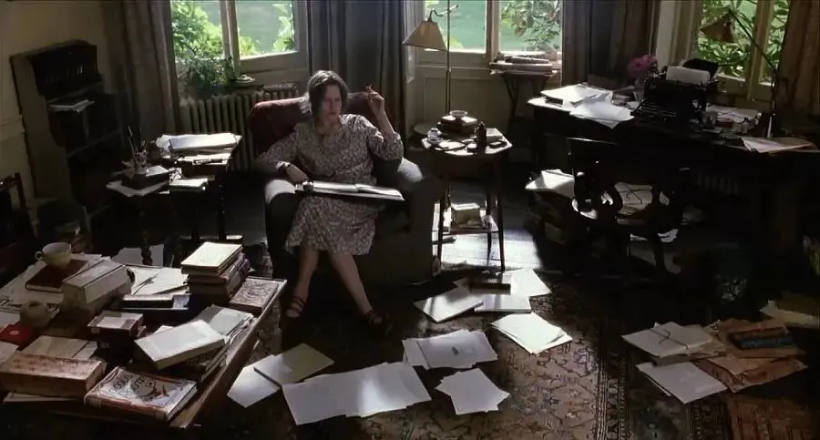
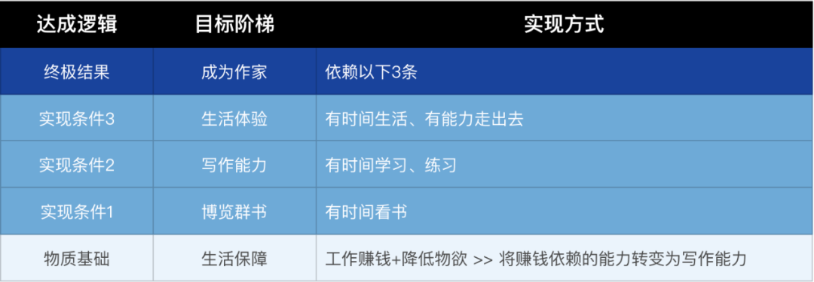

不知道从什么时候开始，我们已经很难把人生当作三段论的：受教育-工作-退休。因为工作变得越来越不稳定，寿命却在明显延长。与此同时，新的技术与行业的出现，让我们的技能遇到挑战，有些技能变得越来越不重要，人们得持续不断地学习新的技能，这样才能保持自己在就业市场上的竞争力。而且，在晚婚晚育的趋势下，很明显我们国家的养老金计划将难以为继，养老重担的大头还是压在我们自己和小家庭上。
所以，我们不得不去主动规划，迎接转型，接受挑战。我们甚至可能放弃之前的专业，进入完全陌生的领域，进行重新专业化。在一切都那么未知的时候，职业生涯规划成为了一项重担，我们可能会选择再教育，选择转行，选择储备副业，总之无法安然度过轻松的职业旅程，常常忙着学习，常常忙着加班。
忙碌的陷阱
对于年轻人来说，在现代职场里，更平等、自由的工作氛围，是更有吸引力的。等级森严、僵化的体制，令人生厌。我也是在这样的情况下，选择转行到了互联网行业。
在《工作的迷思》第八章中，作者见到知名咨询公司的董事长后发现，大权在握的董事长减去了诸多与普通职员不同的装修与家具，而尽可能与普通职员保持一致，在交谈中并非一声令下，而是循循善诱的口吻。
对此，作者写道：当然，权力并未完全消失，只是重新配置。董事长以普通职员的姿态出现，最大限度地保住自己的高位。他做出与众人同呼吸共命运的姿态，他的下级因此钦佩他的真诚。其实他内心里意识到，只有摆出常态才能使自己不致再沦落为普通一员。
这让我想到自己身处的这些个互联网公司，高层规定不可以喊老板、领导，讲话时尽可能语气谦卑、态度恳切，倡导一种平等的对待方式。这可以让主体意识更强的雇员感到更平等、更有尊严感。但其实，我们在结构上仍然是微不足道，极易受到伤害的。营收压力大的时候，被裁员的还是我们。
不过，即使是在认识到自己的工作毫无意义后，我们仍会自以为是地去工作，认真严肃。有些时候，我们还会夸大自己所从事的工作的意义，这绝不是智力低下，而是生活本身的逻辑在我们身上体现。
为什么呢？
因为直面自己的终局，直面生命中最重要的事情，是复杂而困难的。
但是眼前的工作能够转移注意力，营造一个美好的气泡，让我们置身于其中，去使人生臻于完美。它会让我们将无穷无尽的焦虑不安，集中到一些相对较渺小、可望实现的目标上来。它会赋予我们一种大权在握的感觉，使我们有尊严地感到疲惫，看似充实地感到忙碌。总之，它会使我们避免更大的麻烦。
但其实我们就像毛驴，不停追逐着在自己面前晃悠的胡萝卜，而那胡萝卜其实是被一根绑在自己脖子上的棍子吊在眼前。我们从未抵达。
有时候我会愚弄自己，将一切都归咎于资本主义：是它让我经常觉得现代生活像是一场艰苦跋涉，需要一路“煎熬”，才能到达未来某个更好的时光。其实自己与这种局面何尝不是共谋关系。我选择了如此弄巧成拙的方式，将时间视为工具，而之所以这么做，不过是因为它能帮自己保有这种全然掌控人生的感觉。
资本主义当然是原因之一，但，是我们允许资本主义在自己身上产生作用的。我们与当下的劳累、焦虑的局面，是共谋。
虽然，要清晰认识到资本主义的问题，尽力去挣脱出来，是困难的，阻力满满的，但仍然值得一试。
这样，你的不快乐，就不是全然被动的。
最重要的事
2022年11月，我看完《每周工作4小时》后，问自己：我的人生目标是什么？当时，我的基本试想是：
- 结果：成为一名作家
- 条件：博览群书
- 基础：生活有保障
然后我对这个目标进行了具体解构，如下所示：

并且分析了自己现状，当时我觉得自己已经具备了赚钱能力，可以为自己带来生活保障。接下来，应该要尽可能用更多的时间来看书、提升写作能力，然后尽可能将赚钱的方式转变为写作。
但是当时我还在备考 MBA，距离考研只有1个月了。我知道其实读 MBA，是仅仅有助于工作赚钱，并不有利于达成终极结果的事情，非常占据时间，还花费金钱。只是我为了完成人生序列中的一个遗憾、一个不甘心，而做出的尝试。因此我告诉自己：如果考上了，那就算是达成了这个遗憾，不必再有不甘心，是否要去读，则另作决策。如果没考上，那就不必再投入时间去尝试，要珍惜时间，放在对自己最重要的事情上，去阅读、去练习写作，早日达成终极目标。
过了一年，2023下半年我选择了去读 MBA，也就是说——还是没有勇气面对自己的终极目标。
后来我想了想，觉得有两个原因：
- 我并没有明确自己的创作使命，所以看上去在写东西，但其实缺少了核心命题，因此缺乏一种强大的动力。
- 我依然靠着惯性在生活，用忙碌的状态维系着大多数事情。但其实显得忙碌只是懒惰的一种形式：懒于思考，未经选择地去行动。
但渐渐地，还是有了转机。毕竟，我一直在寻找自己到底想过什么样的人生，我所信赖的核心价值是什么。2023年我初步搭建了自己的人生系统，记录下了在各个方面的信条。到了2024年做了第二版迭代，可以说已经清晰了很多。并且终于也具备了行动起来的能力和勇气。
我知道自己生活在错误的状态中，这种想法在我试着提高生产力时显得更加强烈，因为尝试的结果似乎是，真正重要的事被推向距离我视线越来越远的地方。每天，我的时间都花在努力“解决”各种任务上，以便让它们“不碍事”。结果，精神寄托在了未来，等待有一天肯定会有办法去做真正重要的事。
过去我曾经要求自己做什么都要做到最好，成为所在的专业领域里的精英，去跻身第一梯队。但是这会让我一直很累。并且我也逐渐认识到了，这并不是我人生最热爱的事情，而我花费了那么多精力在这个错误的方向上投入，却迟迟没有承认自己热爱的是创作，是想要写出自己满意的作品。
今年，我内心已经清晰了自己的创作使命，虽然进度很慢，但正在往正确的状态走：正视自己的热爱与激情，在有限的闲暇里去阅读、表达、创作。
我想先不设定自己无法达到的标准，只在年度计划里写下：现阶段先把工作上的阶段性总结给输出为一个小报童专栏，然后继续书写针对人生的不断思考与体验，只要一年能写12篇文章就很不错，再能入驻几个适合自己调性的平台就更好了。
至于更长远的目标，那是未来将会水到渠成的事情，先不要给自己那么大的压力。
嗯，先这样吧。